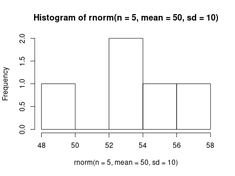
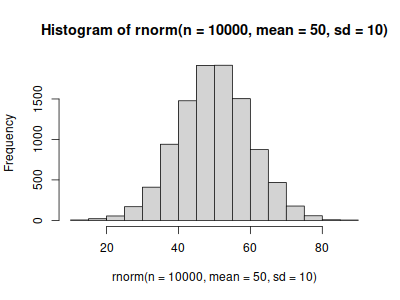
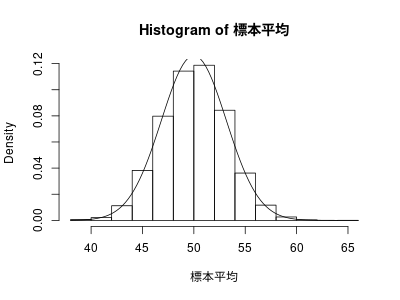
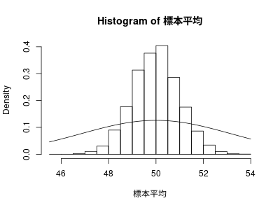
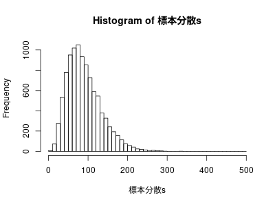
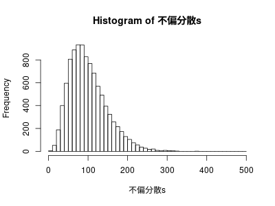

4章 母集団と標本
4.1 母集団と標本
- 母集団
- 標本
- 母数 (パラメーター)
- 標本抽出
4.2 推測統計の分類
推定
点推定
区間推定
検定
- 母集団について述べた二つの異なる主張(仮説)
- どちらを採択するかを決める
4.3 点推定
手順
- 標本の抽出 標本のサイズ $ n $
- 標本を用いて，母平均の推定値を計算する
身長 <- c(165.2, 175.9, 161.7, 174.2, 172.1, 163.3, 170.9, 170.6, 168.4, 171.3)
mean(身長)
var(身長)
[1] 169.36 [1] 21.66711
意味
- 記述統計の文脈では，数値要約のための代表値を求める，こと
- 推測統計の文脈では，母平均の点推定を行う，こと
推定量と推定値
- 標本統計量
- 標本平均，標本分散，…
- 母集団の統計量
- 母平均，母分散，。。。
標本抽出に伴なう誤差
- 推定値と母数の誤差
4.4 推定値がどれくらいあてになるのかを調べる方法
標本抽出の方法としての単純無作為抽出
単純無作為抽出
- 単純無作為抽出によって得られるデータの性質としての確率変数
- 確率変数がどのような値をとるのかを示す確率分布
(サイコロ6 <- ceiling(runif(n=6,min=0,max=6 )))
table(サイコロ6)
[1] 2 4 2 1 5 1 サイコロ6 1 2 4 5 2 2 1 1
サイコロ60000 <- ceiling(runif(n=60000,min=0,max=6 ))
table(サイコロ60000)
サイコロ60000
1 2 3 4 5 6
10041 9981 9961 9926 10110 9981
確率分布を用いた母集団の表現としての母集団分布
男女比が 2:1 である母集団
barplot(c(2/3, 1/3), names.arg=c("男性", "女性"), xlab="性別", ylab="比率", main="図4.3 性別の母集団分布の例") box(lty=1)
無作為抽出の標本は，母集団分布に従う
代表的な母集団分布である正規分布
png("graphs/norm_graphs.png",width=400,height=300) curve(dnorm(x), from=-4, to=4) curve(dnorm(x,sd=2), add=TRUE) curve(dnorm(x,mean=1,sd=1), add=TRUE) norm_graphs <- recordPlot() dev.off() dev.new() replayPlot(norm_graphs) ## うまく再描画されない???
png 2
- Rを使って正規分布の母集団から標本を抽出する方法
4.4.7 正規母集団から単純無作為抽出を行なう
例えば、平均50、標準偏差10の正規母集団からn＝5の標本を無作為抽出 する
rnorm(n=5, mean=50, sd=10) rnorm(n=5, mean=50, sd=10) dev.new() png("graphs/fig-04-07.png", width=400,height=300) hist(rnorm(n=5, mean=50, sd=10)) dev.off() png("graphs/fig-04-08.png", width=400,height=300) hist(rnorm(n=1000, mean=50, sd=10)) dev.off()
[1] 66.52000 35.27322 37.61918 42.73592 58.70167
[1] 53.47085 69.57608 52.92380 46.23520 25.29411
X11cairo
2
X11cairo
2


4.5 標本分布
- 標本分布
標本統計量の確率分布のこと
推定値の信頼性の判断に用いる
標本分布は標本における個々のデータの実現値を表した度数分布ではな く、標本統計量の確率分布であると
4.5.1 標本分布から何が分るのか
- 図4.9 標本分布の中心は、ほぼ「母数の本当の値」の ところに来ている
- 図4.10 標本分布の中心は、「母数の本当の値」からずれている
- 図4.11 標本分布の中心は、ほぼ「母数の本当の値」のところに来てい るが，運が良ければ母数の本当の値に非常に近いものになりますが、 運が悪いと大きく外れてしまうことになります。つまり、当たり外れ が大きくて、推定値はあまりあてになるとはいえなそう
標本分布を調べるときの観点候補:
（1）標本分布が母数の本当の値を中心として分布しているか （2）標本分布が横に大きく広がっていないか
標本分布を経験的に求める
標本分布は次のものから数学的に求まる:
- 母集団分布
- 標本統計量の計算式 (変数変換)
- 標本数
Rを用いて，理論的ではなく，経験的の標本分布を求めることができる
標本統計量の実現値を大量に得られれば，そのヒストグラムは，標本分 布近いものとなるはず。
- サイズ $ n $ の標本を何度も繰かえし抽出し，実現量を計算し，ヒス トグラムを作成する
しかし，母集団分布が母数を含めてわかっていないため，「もし母集団 分布がこのような正規分布だったら、このくらいあてになる推定値が得 られる」ということを検討することになる。
4.5.3 正規母集団の母平均の推定
- 母集団分布 \( \sim N(50, 10^2)\)
- \( n = 10 \)
- 母平均の推定量は，標本平均 \( \overline{X} \)
標本 <- rnorm(n=10, mean=50, sd=10)
mean(標本)
[1] 53.10192
4.5.4 標本分布を求める
母平均の推定を10000回繰り返し
loops = 10000
標本平均 <- numeric(length=loops)
for(i in 1:loops) {
標本 <- rnorm(n=10, mean=50, sd=10)
標本平均[i] <- mean(標本)
}
hist(標本平均)
誤差絶対値5以下 <- ifelse( abs(標本平均-50) <= 5, 1, 0)
table(誤差絶対値5以下)
誤差絶対値5以下 0 1 1167 8833
mean(標本平均) var(標本平均)
[1] 50.01761 [1] 10.06572
png("graphs/fig-04-13.png", width=400, height=300) hist(標本平均,freq=FALSE) curve(dnorm(x,mean=50,sd=sqrt(10)), add=TRUE) dev.off()
png 3

4.5.5 不偏性
推定値 (e.g. 標本平均) の平均 (e.g. 標本分布の平均) は 母集団分布によらず， 母数 (e.g. 母平均) に一致すること
標本平均は，母平均の不偏推定量である。
4.5.6 標準誤差
推定量の標本分布を調べるときの2つの観点のうち「（2）標本分布が横 に大きく広がっていないか」にかかわるのが標準誤差です。
標準誤差は、推定量の標本分布の標準偏差として定義します。
標準誤差が小さいということは、運不運によって結果が大きく左右され ないということです。また、誰がいつやってもだいたい同じ結果が安定 して得られるということもできます。
上で見た、N(50,102)の正規母集団からn＝10の標本を抽出したときの標 本平均の例では、
- 標本平均の標本分布はN(50,10)でしたから、
- 標準誤差は $\sqrt{10}$となります。
一般的に、
- 平均μ、分散σ2の正規分布N(μ,σ2)にしたがう母集団から
- サンプルサイズnの標本を抽出したとき、
- その標本平均の標本分布は \( N(\mu, \frac{\sigma^2}{n}) \)となる
- 標準誤差は \( \frac{\sigma}{\sqrt{n}} \) となります。
このことから、
- 母集団分布の分散（標準偏差）が大きいほど、標本平均の標準誤差が 大きくなる。つまり、母分散が大きいと、そこから無作為抽出した標 本の平均値は母平均から外れた値をとりやすくなる。
- サンプルサイズが大きいほど、標本平均の標準誤差が小さくなる。つ まり、サンプルサイズを大きくすれば、そこから無作為抽出した標本 の平均値は母平均に近い値をとりやすくなる
実際に、先ほどのN(50,102)という母集団からの標本抽出の例で、サンプ ルサイズを10倍のn＝100にしてみると
loops = 10000
sample_size <- 100
標本平均 <- numeric(length=loops)
for(i in 1:loops) {
標本 <- rnorm(n=sample_size, mean=50, sd=10)
標本平均[i] <- mean(標本)
}
hist(標本平均)
誤差絶対値5以下 <- ifelse( abs(標本平均-50) <= 5, 1, 0)
table(誤差絶対値5以下)
mean(標本平均)
var(標本平均)
png("graphs/fig-04-14.png", width=400, height=300)
hist(標本平均,freq=FALSE)
curve(dnorm(x,mean=50,sd=sqrt(10)), add=TRUE)
dev.off()
誤差絶対値5以下
1
10000
[1] 49.9936
[1] 0.9948733
X11cairo
2

4.6 標本平均以外の標本分布
あらゆる標本統計量に対して標本分布を考えることができる。
標本分散と不偏分散の標本分布
- 不偏分散は，母分散の不偏推定量
- 標本分散は，標本の散布度
samples.no <- 10000 sample.size <- 10 this.mean <- 50 this.sd <- 10 標本分散s <- numeric(samples.no) 不偏分散s <- numeric(samples.no) for (i in 1:samples.no) { 標本 <- rnorm(n=sample.size,mean=this.mean,sd=this.sd) 標本分散s[i] <- mean((標本-mean(標本))^2) 不偏分散s[i] <- var(標本) } c(mean(標本分散s),sd(標本分散s)) c(mean(不偏分散s),sd(不偏分散s)) png("graphs/fig-04-16-1.png",width=400,height=300) hist(標本分散s, breaks=seq(0,500,10)) dev.off() png("graphs/fig-04-16-2.png",width=400,height=300) hist(不偏分散s, breaks=seq(0,500,10)) dev.off() 標本分散誤差100以上 <- ifelse(標本分散s>=200,1,0) 不偏分散誤差100以上 <- ifelse(不偏分散s>=200,1,0) table(標本分散誤差100以上) table(不偏分散誤差100以上)
[1] 90.26902 42.74878
[1] 100.29891 47.49865
X11cairo
2
X11cairo
2
標本分散誤差100以上
0 1
9817 183
不偏分散誤差100以上
0 1
9631 369
 
4.6.2 中央値の標本分布
母平均の推定量として，標本平均よりよい標本統計量はないのか？
- よい推定量
- 標本誤差の小さい推定値が得られやすい
中央値を母平均の推定量として使えるか
samples.no <- 10000 sample.size <- 10 this.mean <- 50 this.sd <- 10 標本平均s <- numeric(samples.no) 標本中央値s <- numeric(samples.no) for (i in 1:samples.no) { 標本 <- rnorm(n=sample.size,mean=this.mean,sd=this.sd) 標本平均s[i] <- mean(標本) 標本中央値s[i] <- median(標本) } gc(mean(標本平均s), sd(標本平均s)) c(mean(標本中央値s), sd(標本中央値s))
[1] 49.956336 3.207652 [1] 49.964114 3.734581